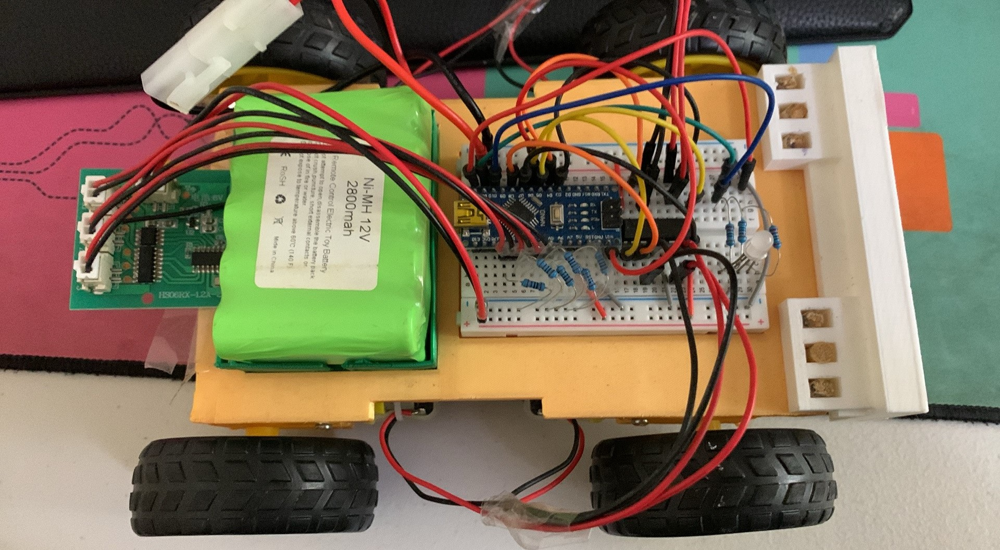
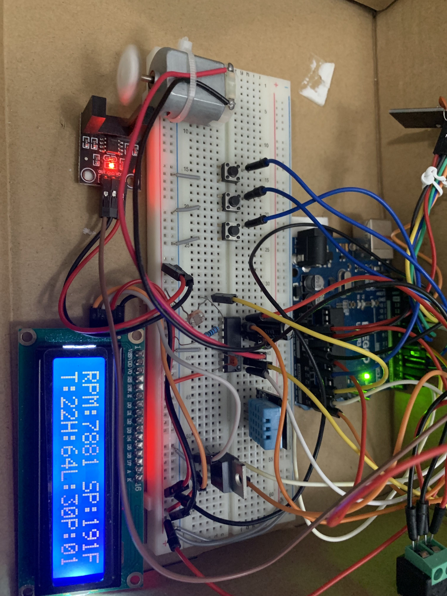

#1. Soccer Bot Project
This project brings together electronics, programming, and 3D printing to create a fully functional remote-controlled car powered by an Arduino Nano. The base of the car is a custom 3D-printed chassis designed to house all the essential components neatly while allowing the RC car to push a small ball with a white ram. The Arduino Nano serves as the microcontroller, programmed using the Arduino IDE. It manages the signals received from a radio receiver chip and translates them into motor commands using an H-bridge motor driver. The firmware was developed to interpret Pulse Width Modulation (PWM) signals from the receiver, enabling precise control of the car's movements, including forward, reverse, left, and right turns.

The car features four independent 12V motors, one for each wheel, providing robust and responsive motion. These motors are driven by the L293D H-bridge chip, which allows bi-directional control and speed modulation via PWM signals generated by the Arduino. Thus, two motors on each side of the car can be controlled separately , allowing it to mimick the movement of a tank, as well as, a responsive driving experience with no turning angle. Powering the setup is a 12V rechargeable lithium-ion battery pack, which fits snugly on the 3D-printed base, ensuring portability and ease of use. The modular design ensures all components are securely fastened and protected during operation.
Altough this project as it is basic, features, such as LED lights, sensors, or even a camera module, can be integrated into the design in the future. Due to the 3D printed base which offers endless possibilities for experimentation and innovation. This project is a fantastic example of how 3D printing, electronics, and programming can come together to create a functional and expandable system.
Below are the link to the code and project summary for the above projects. Please note that the code for these projects are compiled in Arduino IDE and only the code is included for reference.
#2. PID Electronics Speed Controller Project
This project is a custom electronic speed controller (ESC) system built using two Arduino microcontrollers, designed to provide precise and stable motor speed control using closed-loop PID control with motor speed feedback. The system measures motor speed in real time using an infrared (IR) sensor and encoder, allowing the controller to continuously adjust the motor output to maintain a desired RPM. The design emphasizes smooth motor behavior, reliable feedback, and flexibility between manual (non-PID) and PID control modes. The picture below shows the receiver side of the project.

The receiver-side Arduino is responsible for motor control, feedback processing and data collection. It reads RPM data from the IR sensor using hardware interrupts and calculates the motor speed based on the time between pulses. To improve measurement stability, the code applies averaging and filtering techniques to reduce noise and outliers. A software PID control loop then compares the measured RPM to a target setpoint and adjusts the motor’s PWM signal accordingly, allowing the motor to smoothly accelerate, decelerate, and maintain a consistent speed under changing load conditions.
Control commands are transmitted wirelessly using an NRF24L01 radio module. The system supports multiple operating modes, including direct setpoint control and PID-controlled operation. Local pushbuttons on the receiver allows the user to override the wireless PID enable signal, cycling between forced PID on, forced PID off, and radio pass-through control. This ensures safe and predictable behavior even if communication is lost or manual intervention is required. The picture below shows the transmitter side of the project.

The transmitter-side Arduino acts as a bridge between the motor controller and a computer. It communicates with a PC over a serial connection, allowing motor commands and PID settings to be sent from LabVIEW in real time. It also receives sensor data such as humidity, temperature, brightness, and RPM readings from the receiver side and displays the information using LabVIEW. This setup enables live testing, tuning, and visualization of motor performance from a graphical interface, making the project well-suited for experimentation, control-system development, and hardware-software integration. Overall, the project demonstrates practical skills in embedded systems, wireless communication, real-time control, and PID-based motor regulation.